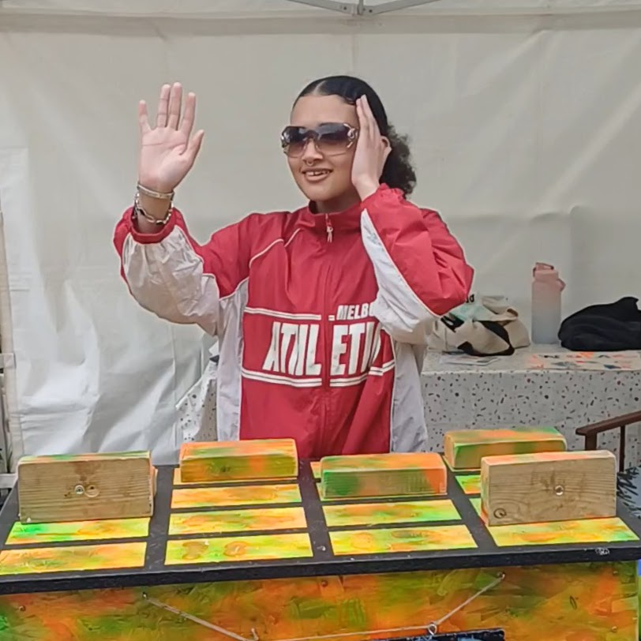
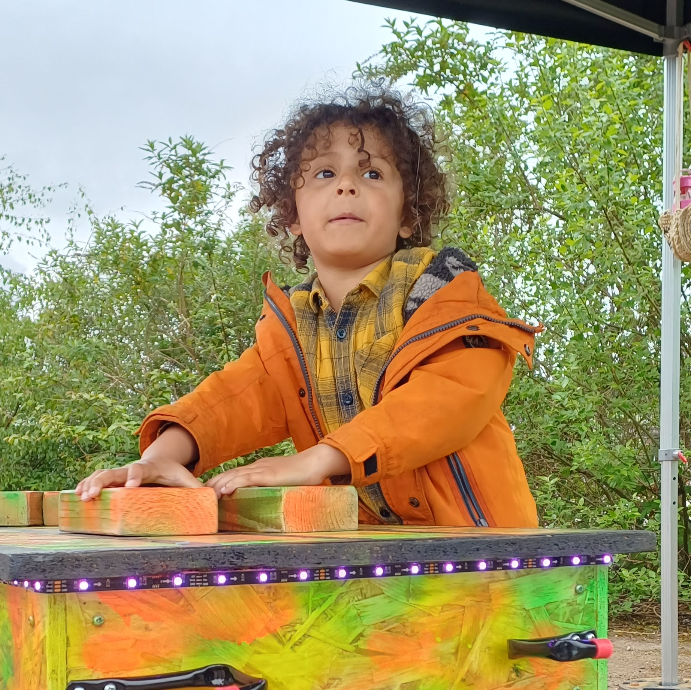
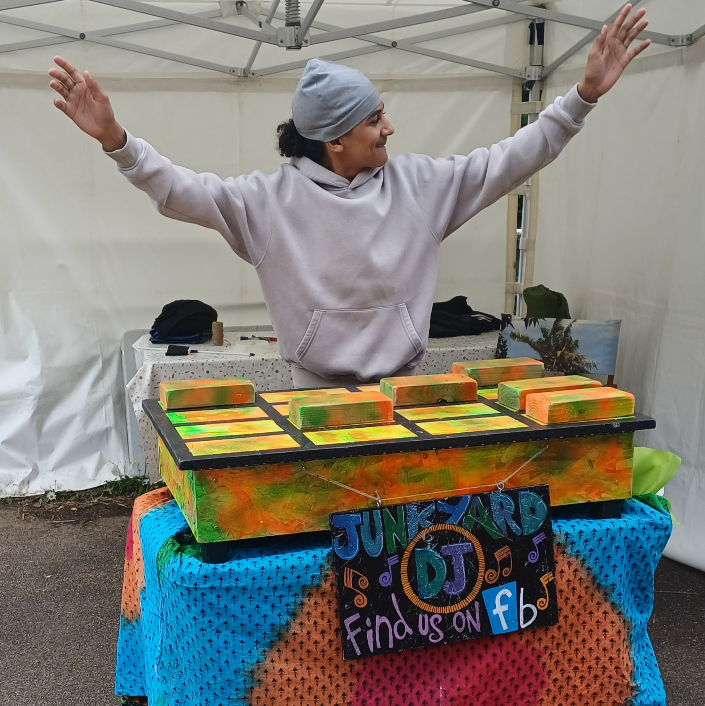
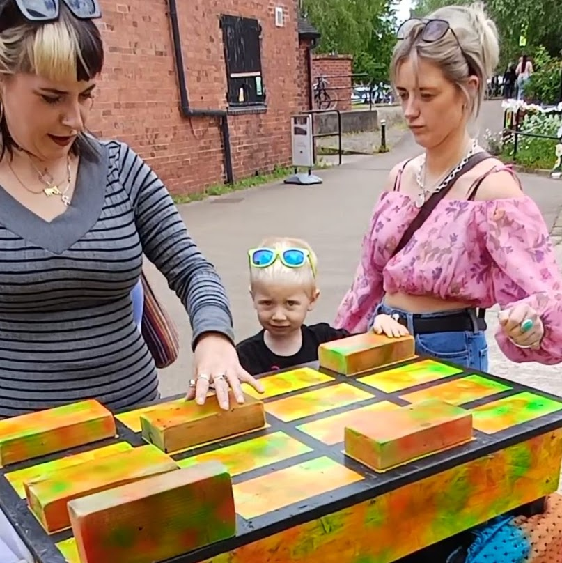
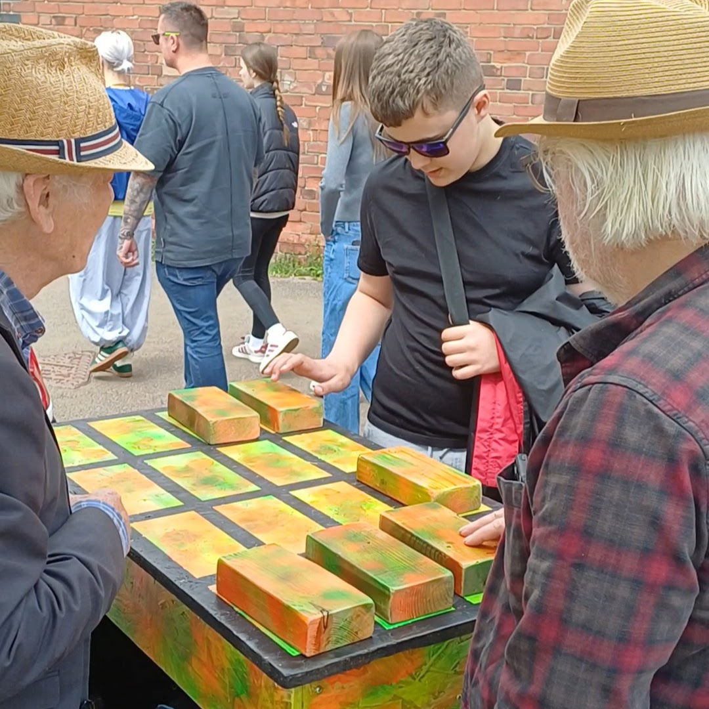
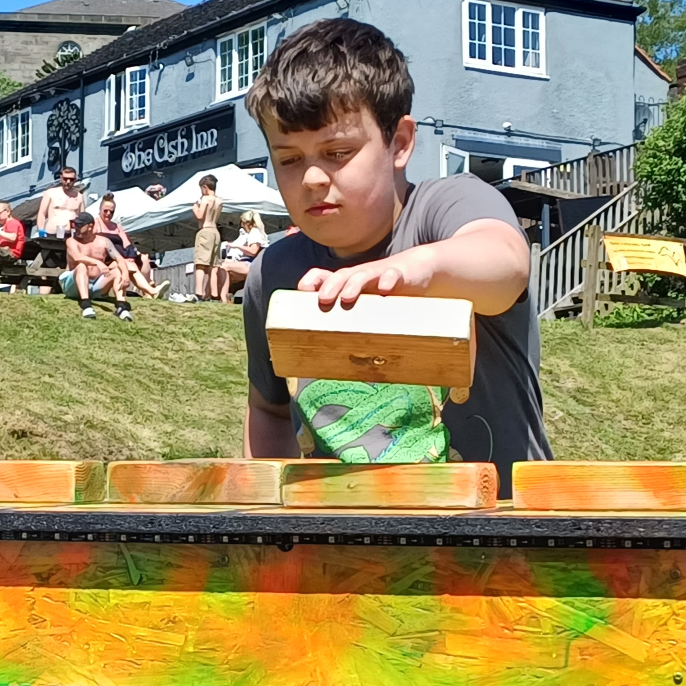

Festivals & Events
A memorable entertainment feature for festivals, weddings, birthdays, private parties, family events and summer fairs.
Junkyard DJ brings a hands-on interactive mixing desk that lets people jump in and start mixing with zero DJ experience. Ideal for festivals, weddings, parties, summer fairs and inclusive group sessions.
What Junkyard DJ does
Instead of standing on the sidelines, people get a chance to step up and have a go themselves by simply chosing the block positions to trigger the preloaded samples. The device takes care of the rest! The setup is designed to be welcoming, low-pressure and easy to use for kids, adults and complete beginners.
A memorable entertainment feature for festivals, weddings, birthdays, private parties, family events and summer fairs.
Interactive music sessions for schools, youth groups, activity days and community organisations.
Approachable, engaging and suitable for mixed ages and abilities, including sessions tailored for additional needs settings.






How it works
Whether you book Junkyard DJ for a one-off event or hire the setup for a school day or celebration, the aim is the same: make music feel fun, social and accessible. We can even tailor the samples to suit specific themes or audiences. You're a techno fan? We can load up some techno samples. Want to play some house? We can do that too. The possibilities are endless!
At a glance
Ready to book?
Whether you’re planning a wedding, organising a school visit or putting together a summer event, Junkyard DJ can bring a hands-on music experience people actually remember.